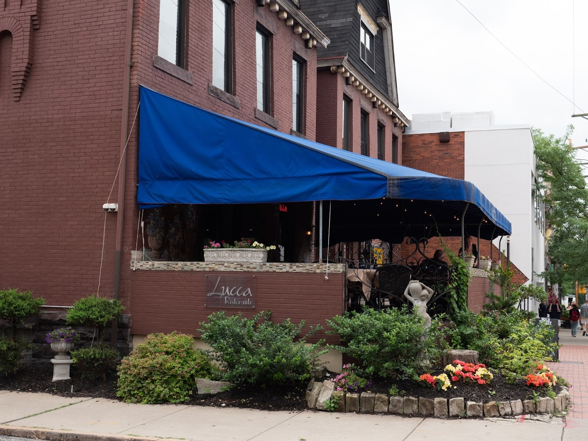

My Favorite Online Games
- Minecraft
- Call of Duty
- Madden 24

My Favorite Restaurants in Oakland
-
Lucca Ristorante - A charming Italian bistro with a cozy atmosphere. Known for its artisanal pizzas and handmade pasta.
-
Smashed Waffle - An innovative fusion eatery offering a unique blend of Asian and Latin cuisines. The spicy tuna tacos are a must-try.
-
Union Grill - A classic American diner that takes you back in time. Their homemade pies and all-day breakfast menu are local favorites.

Common Web Design Terms
- HTML
- HyperText Markup Language, the standard markup language for documents designed to be displayed in a web browser.
- CSS
- Cascading Style Sheets, a style sheet language used for describing the presentation of a document written in HTML.
- JS
- JavaScript, a programming language used to create interactive effects within web browsers, enhancing user experiences and providing dynamic functionality.